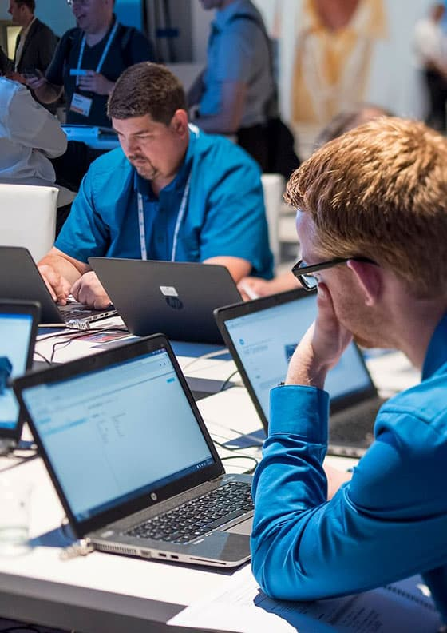
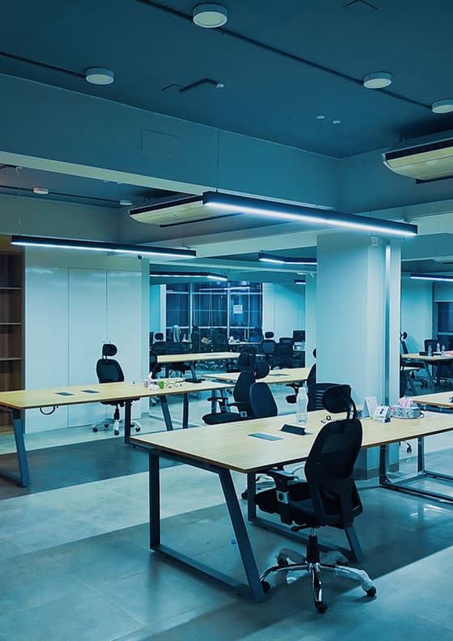

IT аутсорсинг – це порівняно молода гілка бізнес-послуг на теренах нашої країни. Діяльність компаній, які пропонують послуги IT аутсорсингу, поширюється переважно на автономне обслуговування комп'ютерів клієнта. Наприклад, якщо вам економічно невигідно утримувати в штаті системного адміністратора, то ви спокійно можете укласти клієнтську угоду з компанією аутсорсерів і отримати тим самим постійне професійне обслуговування та налаштування ваших комп'ютерів.
Розробка
ПЗ
Ми пропонуємо повний цикл розробки програмного забезпечення, починаючи з визначення вимог до продукту спільно із замовником та розробки технічного завдання та закінчуючи впровадженням бізнес-додатків. Кожне рішення супроводжується технічним описом та інструкцією для користувачів.
IP
телефонія
P-телефонією називають голосовий зв'язок, який здійснюється за мережами, призначеними для передачі даних, частіше — по IP-мережах (термін IP розшифровується як «Internet Protocol»). В даний час зв'язок з використанням IP-телефонії стала витісняти традиційні мережі телефонного зв'язку завдяки своїй низькій вартості дзвінків, легкості розгортання, високої якості з'єднання та зв'язку, їхній порівняльній безпеці, простоті конфігурування.
web
дизайн
У нашій компанії ми розробляємо сайти, які дають прибуток. Великий досвід роботи дозволяє нам надавати послуги високої якості в галузі створення веб-дизайну сайту. Всі створені нами ресурси зручні, оригінальні та мають привабливий вигляд. А головне, розроблені нашою компанією сайти виконують функцію інструменту продажу, дозволяючи розширювати коло потенційних клієнтів, тим самим збільшуючи прибуток вашої компанії.
відновлення
даних
Втрата важливої інформації та її недоступність через цифрові носії можуть бути як випадковістю - результатом поломки, шлюбу, некоректного поводження, так і навмисним кроком з боку зловмисників з метою «стерти» невигідні їм дані чи «цифрові» докази злочину. В обох випадках організації, що зіткнулася з проблемою відновлення даних, необхідне її оперативне та надійне рішення.
выделение
сервера
Головне завдання виділеного сервера – забезпечення повного доступу до програмного та апаратного забезпечення. Користувач може проводити будь-які технічні роботи на сервері і це не завадить функціонуванню основних служб. Також його використовують для забезпечення мережевої безпеки. Ще одне завдання виділеного сервера – забезпечення безперебійного доступу до бази даних компанії.
ми пропонуємо
послуги для підприємств
Технічна підтримка та IT-обслуговування.
Файлові сервери
Мережеве обладнання.
Створення та обслуговування корпоративної пошти.
Ремонт серверів, офісної техніки.
послуги для бізнесу (B2B)
Розробка програмного забезпечення.
Комплексна розробка веб-додатків і створення софту будь-якої складності.
Навчання та тренінги для персоналу, який користуватиметься продуктами.
Створення та обслуговування корпоративної пошти.
Хмарний консалтинг.
консультація
Повна бізнес-аналітика чинних процесів компанії.
Виявлення ключових показників ефективності, практичні рекомендації щодо оптимізації, масштабування та систематизації.
Оцінка безпеки та виявлення ризиків.
9
років на ринку
32
офісів по світу
110
наданих послуг
90+
постоянних членів клубу
наші переваги
Швидкість
Ми робимо все у найкоротший термін, готові працювати в екстрених ситуаціях. У нашій компанії час – найбільша валюта.
Надежность
Вже 7 років ми займаємо лідируючі позиції у цій ніші. У нашій компанії не відбувається випадкових ситуацій та несподіванок. Ми - команда професіоналів із великим досвідом, на яку можна і варто покластися на нас, варто покластися.
Новаторство
«Хто не встиг, той запізнився», — у 21 столітті ця фраза звучить дуже актуально, якщо врахувати, що нове з'являється кожен день, кожну годину, кожну хвилину, навіть зараз. Наша компанія завжди стежить за інноваціями та змінами на ринку, тому наші клієнти отримують тільки найкращі рішення.
про нас
BITCODE приветствует Вас!
Компанія «Біткод» вийшла на ринок інформаційних технологій (ІТ) у 2015 році. Перед співробітниками компанії стояло завдання не лише утриматися в конкурентному середовищі, а й розвивати нові напрями для надання схеми обслуговування «Все з одних рук». Наш сервіс максимально адаптований для компаній маЛоготип та середнього бізнесу, включаючи специфіку процесів та цінову політику.
Ми пишаємось тим, що багато наших корпоративних клієнтів протягом багатьох років співпраці розвиваються з нами. Ми раді, що нам вдалося допомогти їм оптимізувати бізнес -процеси, відповідати сучасним економічним проблемам та бути успішними на ринку. Протягом багатьох років була сформована стратегія компанії, що дало змогу надійно закріпити на ІТ -ринку.
Сьогодні ми готові запропонувати своїм клієнтам надійний та якісний сервіс, висококваліфікований персонал та розвинену систему технічної підтримки з мінімальним часом реагування.


Залишити заявку
наші партнери
Компанія "БІТКОД" співпрацює з представниками різних сфер бізнесу. Гнучкість наших фахівців дозволяє нам бути корисними для будь-якої галузі. Починаючи працювати з компанією, ми перестаємо бути для них партнерами, ми стаємо невід'ємною частиною їхнього бізнесу.